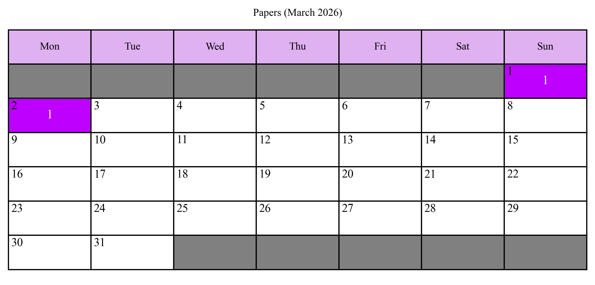

This is where I log the papers I've read this year. My goal for 2026 is to read 300 papers. By the last time this document was last updated (January 25, 2026), I have read 10 papers this year. I should have read 20 papers by this time, meaning I am 10 papers behind schedule.

| 1/19/26 | The Landscape of GPU-Centric Communication | Link | Koç University, arXiv, 2024 |
| 1/18/26 | Hot Regions in SPEC CPU2017 | Link | UT Austin, IISWC, 2018 |
| 1/12/26 | A Scheduling Framework for Efficient MoE Inference on Edge GPU-NDP Systems | Link | Nanjing University China, arXiv, 2026 |
| 1/10/26 | PyTorch FSDP: Experiences on Scaling Fully Sharded Data Parallel | Link | Meta AI, Proceedings of the VLDB Endowment, 2023 |
| 1/8/26 | MSCCL++: Rethinking GPU Communication Abstractions for Cutting-edge AI Applications | Link | Microsoft, arXiv, 2025 |
| 1/8/26 | Design Space Exploration of DMA based Finer-Grain Compute Communication Overlap | Link | UT Austin/AMD, arXiv, 2025 |
| 1/7/26 | GPGPU Power Modeling for Multi-Domain Voltage-Frequency Scaling | Link | UT Austin, IEEE Transactions on Computers, 2012 |
| 1/3/26 | Phase-Based Frequency Scaling for Energy-Efficient Heterogeneous Computing | Link | University of Salerno Italy, IPDPS, 2025 |
| 1/2/26 | Runtime Power Monitoring in High-End Processors: Methodology and Empirical Data | Link | Princeton, MICRO, 2003, 12 pages |
| 1/1/26 | GPGPU Power Modeling for Multi-Domain Voltage-Frequency Scaling | Link | 2018, 12 pages |
| 12/31/25 | Designing Spatial Architectures for Sparse Attention: STAR Accelerator via Cross-Stage Tiling | Link | 2025, 15 pages |
| 12/31/25 | Optimal Software Pipelining and Warp Specialization for Tensor Core GPUs | Link | 2025, 15 pages |
| 12/27/25 | Optimizing Distributed ML Communication with Fused Computation-Collective Operations | Link | 2024, 17 pages |
| 12/26/25 | Defect graph neural networks for materials discovery in high-temperature clean-energy applications | Link | 2023, 12 pages |
| 12/24/25 | Power Stabilization for AI Training Datacenters | Link | 2025, 10 pages |
| 12/23/25 | Advancing Cloud Computing Capabilities on gem5 by Implementing the RISC-V Hypervisor Extension | Link | 2024, 8 pages |